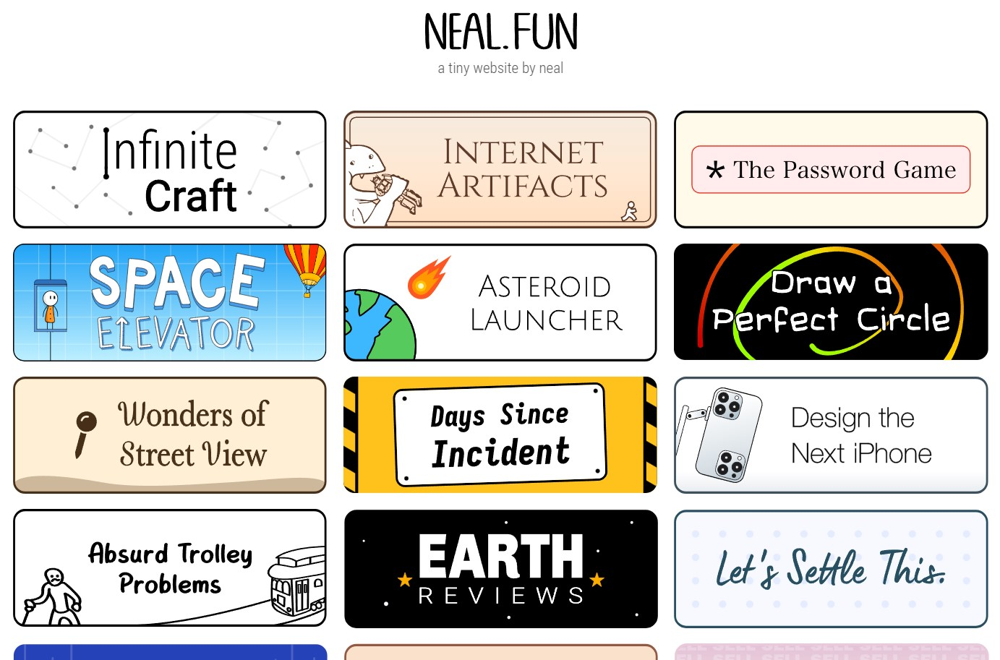
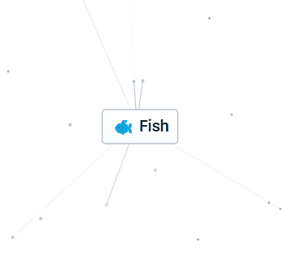
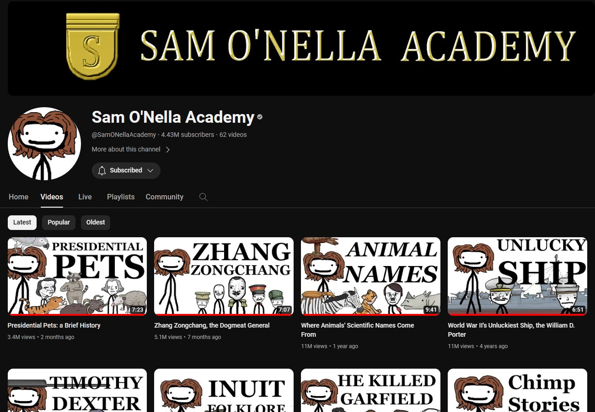
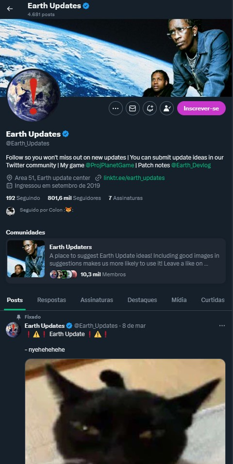
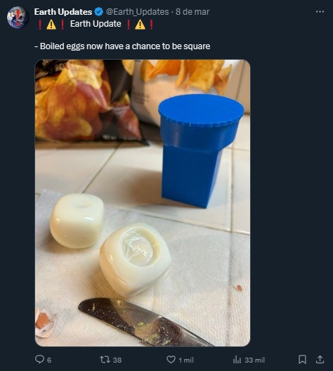
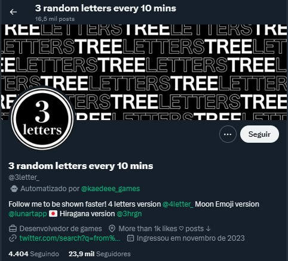
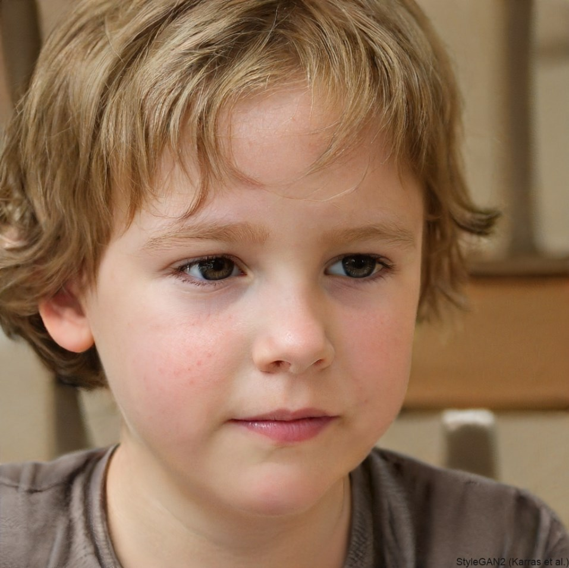

Sites e vídeos do meu interesse
- Neal.fun Site de vários pequenos jogos e assuntos interessantes feitos por Neal Agarwal.

Um desses jogos é o Infinite Craft, que consiste em juntar duas coisas para criar outra. Porém nessa versão feita por Neal é usado inteligência artificial para deixar as combinações praticamente infinitas.

-
Um canal no YouTube que eu aprecio muito é o Sam'o Nella Academy, que faz vídeos sobre história, ciência e curiosidades de uma forma engraçada e informativa.

Um dos meus vídeos favoritos dele é o de top 10 piores estruturas ósseas no reino animal.
- A conta do Twitter Earth Updates que diz que a terra é um jogo e lança as atualizações dela. Geralmente postando vários memes e posts engraçados para comunidade.  
- Outra conta do twitter é a 3 random letters every 10 mins ou em português 3 letras aleatórias a cada 10 minutos. O nome da conta já fala por si só. É interessante ver como a comunidade no twitter reage quando uma expressão, gíria ou palavra de 3 letras aparece, quando isso acontece pessoas de diferentes línguas respondem o post. 
- Um site chamado This person does not exist ou emportuguês 'Essa pessoa não existe' que cria imagens de faces humanas extremamente realistas de pessoas que não existem usando inteligencia artificial.
Essas duas imagens foram geradas usando o site, essas pessoas não existem.
